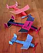

|  | These are but a few of the Pussycats built by Marin Aero Club members. This venerable design by Dick Baxter is one of our favorite models for a beginner's introduction to a built up fuselage. It is also commonly built by more experienced modelers just to have something simple and fun to fly when the mood strikes.
The basic Pussycat design is about as simple as you can get, both for construction, and for flying. Quick and easy to build, it is a rare model that hasn't flown beautifully within a flight or two of completion. |
| A kit is available for the original design. Contact your local hobby shop, and have them order a bunch from |
Lee's Hobbies
1342 La Bella Avenue Sunnyvale, CA 94087 |
If you are a bit too impatient, plans are available online for a larger version, the "Big Pussycat". You can scale the drawing to any size you desire with a photocopier.
The Pussycat is a good outdoor airplane in wind less than 5 or 6 mph. Faster winds cause it to be tossed around by turbulence, but it will still fly OK if you want to chase it.. At the Marin Aero field, we have seen them fly out of sight in thermals many times.
read a few more thoughts about the Pussycat from other modelers
return to
Marin Aero Club gallery | home page
Copyright 1998, Thayer Syme. All rights reserved